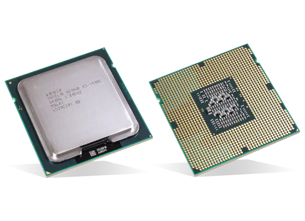
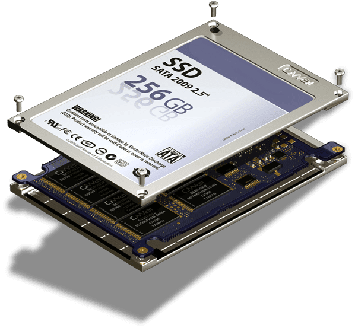

Motherboard

Motherboards contain a ROM (and later EPROM, EEPROM, NOR flash) to initialize hardware devices, and loads an operating system from the peripheral device. Microcomputers such as the Apple II and IBM PC used ROM chips mounted in sockets on the motherboard. At power-up, the central processor unit would load its program counter with the address of the Boot ROM and start executing instructions from the Boot ROM. These instructions initialized and tested the system hardware, displays system information on the screen, performed RAM checks, and then loaded an operating system from a peripheral device. If none was available, then the computer would perform tasks from other ROM stores or display an error message, depending on the model and design of the computer. For example, both the Apple II and the original IBM PC had Cassette BASIC (ROM BASIC) and would start that if no operating system could be loaded from the floppy disk or hard disk.
CPU (Central Processing Unit)

The CPU (central processing unit), which performs most of the calculations which enable a computer to function, and is referred to as the brain of the computer. It takes program instructions from random-access memory (RAM), interprets and processes them and then sends back results so that the relevant components can carry out the instructions. The CPU is a microprocessor, which is fabricated on a metal–oxide–semiconductor (MOS) integrated circuit (IC) chip. It is usually cooled by a heat sink and fan, or water-cooling system. Most newer CPU includes an on-die graphics processing unit (GPU). The clock speed of CPU governs how fast it executes instructions and is measured in GHz; typical values lie between 1 GHz and 5 GHz. Many modern computers have the option to overclock the CPU which enhances performance at the expense of greater thermal output and thus a need for improved cooling.
RAM(Random Access Memory)
Random-access memory (RAM), which stores the code and data that are being actively accessed by the CPU. For example, when a web browser is opened on the computer it takes up memory; this is stored in the RAM until the web browser is closed. It is typically a type of dynamic RAM (DRAM), such as synchronous DRAM (SDRAM), where MOS memory chips store data on memory cells consisting of MOSFETs and MOS capacitors. RAM usually comes on dual in-line memory modules (DIMMs) in the sizes of 2GB, 4GB, and 8GB, but can be much larger.
Graphics processing unit(GPU)

A graphics card (also called a graphics processing unit, video card, display card, graphics adapter, video adapter, or display adapter) is an expansion card which generates a feed of output images to a display device (such as a computer monitor). Frequently, these are advertised as discrete or dedicated graphics cards, emphasizing the distinction between these and integrated graphics. At the core of both is the graphics processing unit (GPU), which is the main part that does the actual computations, but should not be confused with the graphics card as a whole, although "GPU" is often used as a metonymic shorthand to refer to graphics cards.
Power supply
A power supply unit (PSU) converts mains AC to low-voltage regulated DC power for the internal components of a computer. Modern personal computers universally use switched-mode power supplies. Some power supplies have a manual switch for selecting input voltage, while others automatically adapt to the mains voltage.
Most modern desktop personal computer power supplies conform to the ATX specification, which includes form factor and voltage tolerances. While an ATX power supply is connected to the mains supply, it always provides a 5-volt standby (5VSB) power so that the standby functions on the computer and certain peripherals are powered. ATX power supplies are turned on and off by a signal from the motherboard. They also provide a signal to the motherboard to indicate when the DC voltages are in spec, so that the computer is able to safely power up and boot. The most recent ATX PSU standard is version 2.31 as of mid-2008.
Hard disk drives (HDDs)
A hard disk drive (HDD), hard disk, hard drive, or fixed disk[b] is an electro-mechanical data storage device that stores and retrieves digital data using magnetic storage and one or more rigid rapidly rotating platters coated with magnetic material. The platters are paired with magnetic heads, usually arranged on a moving actuator arm, which read and write data to the platter surfaces.[2] Data is accessed in a random-access manner, meaning that individual blocks of data can be stored and retrieved in any order. HDDs are a type of non-volatile storage, retaining stored data even when powered off.[3][4][5] Modern HDDs are typically in the form of a small rectangular box.
Solid-State Drive (SSD)

A solid-state drive (SSD) is a solid-state storage device that uses integrated circuit assemblies to store data persistently, typically using flash memory, and functioning as secondary storage in the hierarchy of computer storage. It is also sometimes called a solid-state device or a solid-state disk,[1] even though SSDs lack the physical spinning disks and movable read–write heads used in hard disk drives (HDDs) and floppy disks.
Compared with electromechanical drives, SSDs are typically more resistant to physical shock, run silently, and have quicker access time and lower latency.[3] SSDs store data in semiconductor cells. As of 2019, cells can contain between 1 and 4 bits of data. SSD storage devices vary in their properties according to the number of bits stored in each cell, with single-bit cells ("Single Level Cells" or "SLC") being generally the most reliable, durable, fast, and expensive type, compared with 2- and 3-bit cells ("Multi-Level Cells/MLC" and "Triple-Level Cells/TLC"), and finally quad-bit cells ("QLC") being used for consumer devices that do not require such extreme properties and are the cheapest per Gigabyte of the four.